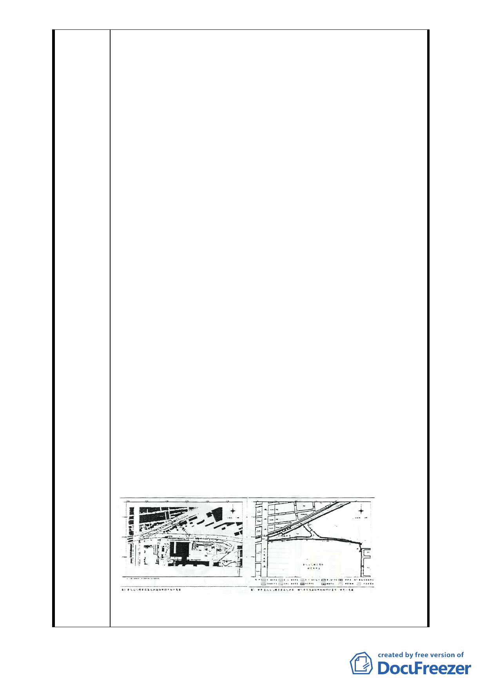

查會能夠早一點通知我們，結果這次連開會通知都沒有發給
我，這實在是非常過分的事情。新仁里再次聲明本里堅決反
對本變更計畫，請各位委員要求申請單位尊重民意重新規劃
替代方案，如本案路線最後仍要與忠孝東路四段 553 巷銜
接，本里將於工程進行時封路抗爭。
２本里認為「臺北市文化體育特定專用區」整體規劃內容過度
商業化，完全與文化、體育無關，已違反都市計畫設定特定
專用區的原始意涵。本里堅決反對大巨蛋案與文創園區商業
設施過多的設計方案，如欲配合現行的規劃內容，應將此特
定專用區更名為「臺北文創巨蛋商業特區」，避免誤導社會
大眾以為「臺北文化體育園區」是以文化、體育為重心。本
里更期望都市計畫委員會應要求臺北市政府重新審視與規
劃松山菸廠，勿重蹈交九轉運站、市府轉運站等案之覆轍，
這兩案雖名為轉運站，轉運站面積卻只佔整體開發的 9.4%
與 5.7%的，興建完成後造成周邊交通莫大的衝擊，真的很好
笑。
３本案屬「臺北文化體育園區」中的交通動線規劃，關於本案
曾由臺北市政府於十一月十七日、十一月二十六日召開兩場
說明會，本里里民皆表達反對本案的設計方式！懇請諸位不
要為了財團利益，讓我們當地及鄰近人民沒地方活動外，還
要承受諸多交通衝擊與空氣污染，甚至還要犠牲小朋友行路
安全，實在讓人無法接受。
４本里堅決反對「變更計畫」圖四、圖五有關北側道路之規劃
內容──原交通動線設計連接忠孝東路四段 553 巷北側，而
553 巷為本里重要聯外道路，寬度僅七米，若依照變更計畫
實行，則大巨蛋案所帶來的車流，將嚴重影響本里里民進出
本里之便利性，以及緊急事故與消防救災的安全性。另外本
里也反對市民大道車流利用 553 巷北段往南進入逸仙路向北
段延伸的地下停車場出入口，大量等待進出場的車輛將造成
553 巷的壅塞與空氣污染。
５該案目前規劃係由市民大道往東方過光復南路後，設置平面
道路連接忠孝東路四段 553 巷，往南至刑事警察局北側，從
- 17 -